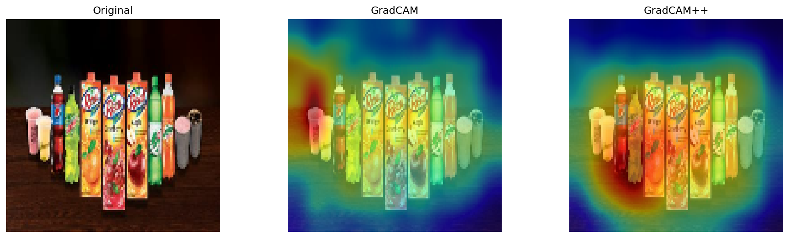
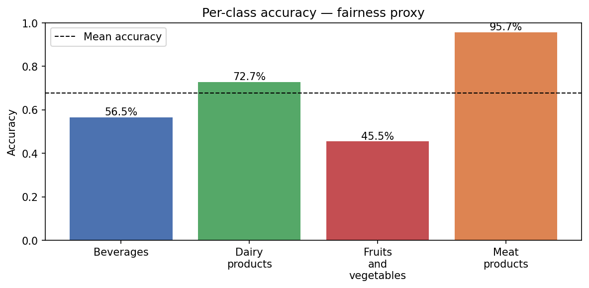
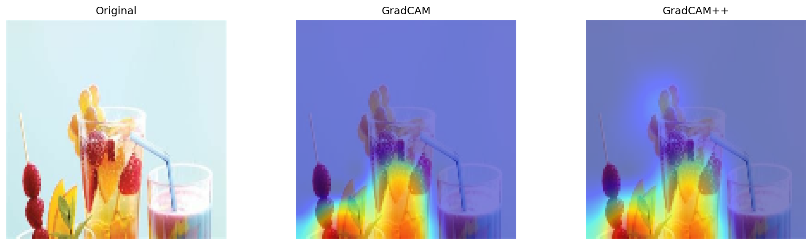
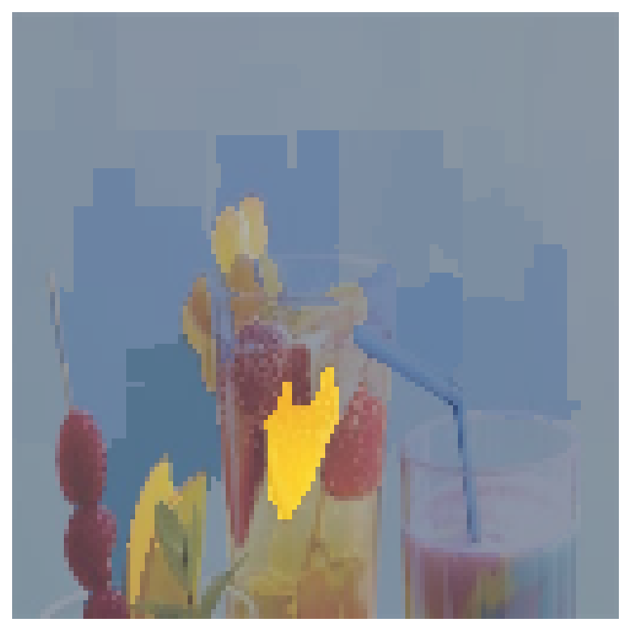

A CNN classifier for grocery product categories, with five XAI methods (Grad-CAM, LIME, SHAP...) to understand model decisions, a fairness analysis revealing a 50 pp accuracy gap, and a real A/B usability test.

The starting point: a CNN that classifies grocery product images into four categories (Beverages, Dairy, Fruits & Vegetables, Meat). 880 images scraped from Google Images, four architecture iterations, V1 through V4.
The interesting part came after training. V2 outperformed V4 — the model with more layers and Dropout scored lower. On a small dataset (880 images), regularisation that should help actually hurts. This isn't a bug, it's a genuine finding about the relationship between dataset size and regularisation.
Then came the harder question: why does the model fail? Five XAI methods were applied to understand decision patterns, find failure modes, and identify a significant fairness problem hidden inside the accuracy numbers.
| Model | Architecture | Val Acc |
|---|---|---|
| V1 | 2 conv layers | 80.1% |
| V2 ✓ | 3 conv layers | 84.7% |
| V3 | 3 conv + Dropout | 74.4% |
| V4 | 4 conv + Dropout | 79.6% |

Overall test accuracy: 67.8%. Sounds acceptable. But per-class accuracy tells a different story.
The main failure mode: 12 out of 22 Fruits & Vegetables test images were misclassified as Beverages. Root cause: the dataset contains fruit juice, smoothies, and garnished drinks — visually ambiguous between the two classes.
Five complementary XAI methods were applied to V4 to understand what drives decisions — both correct and incorrect ones.
Grad-CAM / Grad-CAM++ — spatial heatmaps showing which image regions the model attends to. Correct: bottle shapes and labels. Incorrect: colour and container shape, not product content.
LIME — superpixel attribution via local linear approximation. The most striking finding: a single small yellow superpixel (a berry inside a glass) drove an entire misclassification. The model relies on minimal, fragile features.
Integrated Gradients — per-pixel importance along gradient path from black baseline. Highlights fine-grained texture details on packaging labels as the primary decision signal.
KernelSHAP — Shapley value-based superpixel attribution. Consistent with LIME findings, confirms reliance on localised cues.


Two interface designs for the classifier app were tested with real users. An independent samples T-test (with Shapiro-Wilk normality and Levene variance homogeneity checks) found statistically significant differences on 3 out of 5 questions (p < 0.05).
The full analysis including test assumptions, visualisations, and interpretation is in notebooks/04_ab_test_hcai.ipynb.
CNN training notebooks, all five XAI methods, fairness analysis, and A/B test with statistical tests — on GitHub.